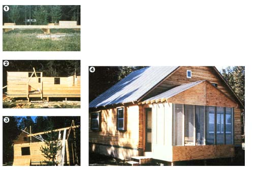

PHOTOS BY THE AUTHOR
COUNTERCLOCKWISE LSE FROM UPPER LEFT. The house stands on three stub walls built from pressure-treated limber . . . . The front wall of 2 X Q's goes up around the door opening fat left t), which is cross braced with boards .... The ridge beam was raised one step at a time,between two tracks of vertical 2 X 4's, while the gable on the nearest end was constructed beneath .... The completed $5,000 home. design measured 16' X 20', but try as we might, we couldn't split up the space to give us the rooms we needed. After that initial drawing, we tried just about every imaginable combination of dimensions between the original ones and the final 24' X 24' plan we settled on. I can assure you that we drew, argued about, and discarded all other possible layouts.